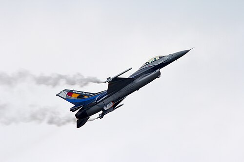

UAP-013 // CASE REVIEW
Belgian UFO wave and F-16 reports
No public data establish extreme acceleration or a single fleet; one false photo does not invalidate all witnesses.

.jpg){kind=link}
The claim
The exact claim is: Residents reported triangular lights in 1989–90; fighter radar claims are presented as proof of impossible maneuvers. This dossier treats “UAP” as a report category, not a cause. Evidence that an event was reported differs from evidence identifying its stimulus, and both differ from proof of non-human technology.
Timeline & provenance
Provenance and sequence: Reports spanned months; F-16s were dispatched in March 1990, and an Air Force study followed; a famous photo was admitted as a hoax. Contemporary records may preserve exact wording better than late recollections, though official files can omit context. Repeated versions of one story are not independent corroboration simply because several people repeat them.
What is independently documented
The documented core is limited: Air Force briefings and witness/radar summaries document a wave, while the widely circulated photo was fabricated. An agency file proves institutional attention, not that every statement in it is true. This distinction matters when a report is incomplete, secondhand, or assembled long after the event.
Physical and sensor limits
The evidence has significant limits: Raw radar, telemetry, and synchronized observations are unavailable; radar locks can involve clutter or track errors. Without calibrated range, angular size, synchronized clocks, known sensor settings, and raw rather than edited data, estimates of speed, shape, and acceleration may be unreliable.
Mundane and competing explanations
Competing explanations should be tested, not assumed. Aircraft, stars, helicopters, and propagation could explain separate reports; multiple causes are plausible. A conventional account must fit timing, direction, environment, and reliable observations. Failure to select one does not make an extraterrestrial explanation the default, especially when basic metadata are missing.
Calibrated status
Assessment: No public data establish extreme acceleration or a single fleet; one false photo does not invalidate all witnesses. The conclusion is limited to public evidence. “Unidentified” means that available data did not yield a dependable identification; it is not synonymous with extraterrestrial, interdimensional, or technologically superior. Secrecy alone is not evidence of alien technology.
What would change the view?
Useful evidence would include Original returns, aircraft telemetry, and synchronized independent video could test maneuver claims. Original files with metadata, independently synchronized observations, reproducible analysis, and transparent custody for physical samples are more valuable than additional retellings.
Sources & further reading
- National Archives of AustraliaArchival references establish departmental handling, not the truth of a witness interpretation.
- CNES GEIPAN case-study portalCivilian classifications describe residual uncertainty rather than aliens; case data quality varies.
- NASA UAP Independent StudyScientific guidance prioritizes calibrated, reproducible evidence; it does not adjudicate each historical case.